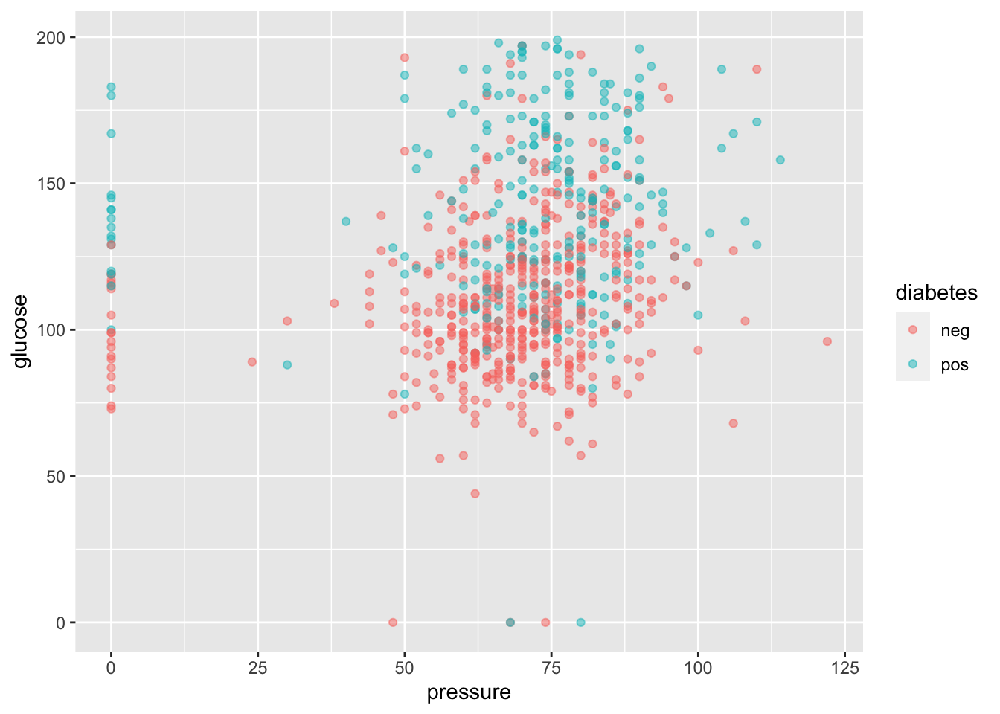
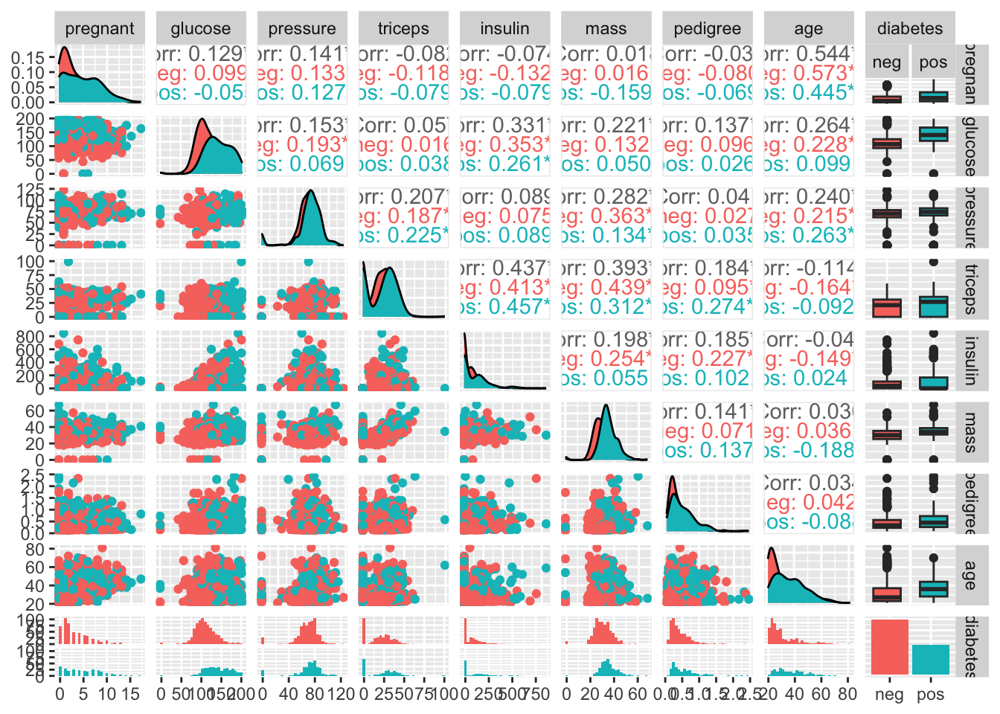
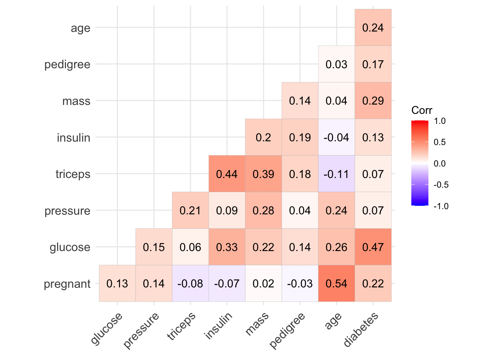
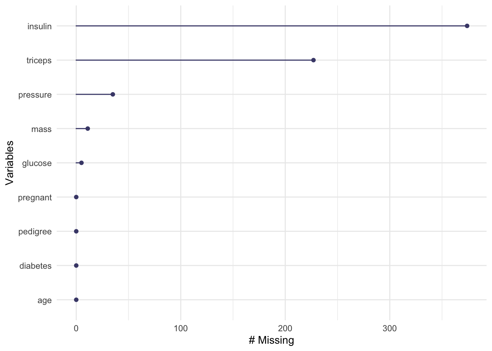
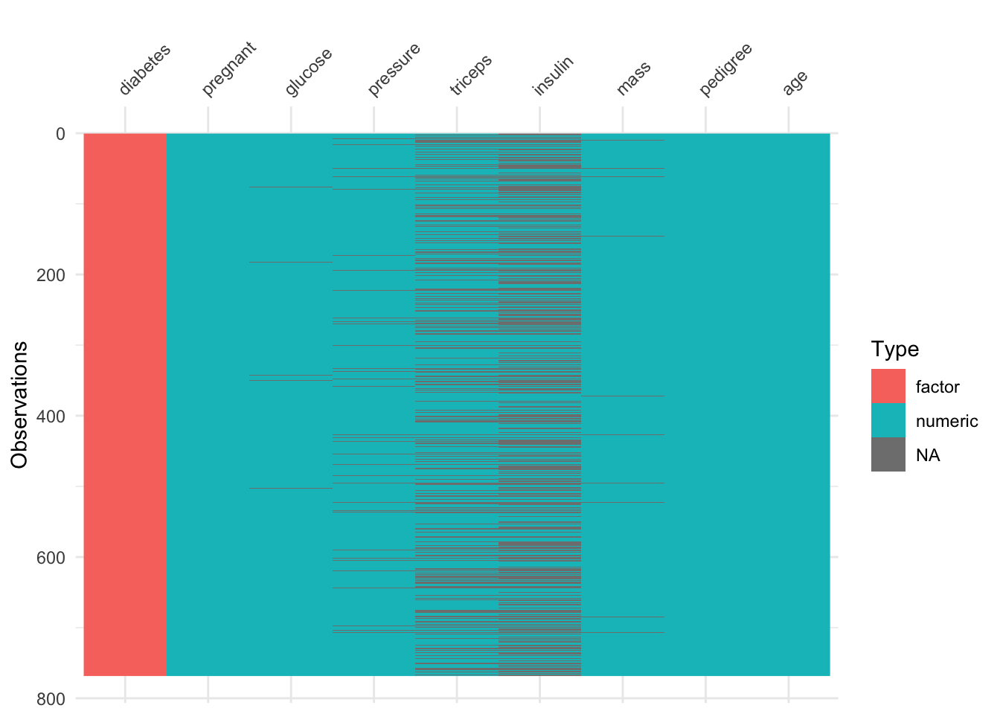
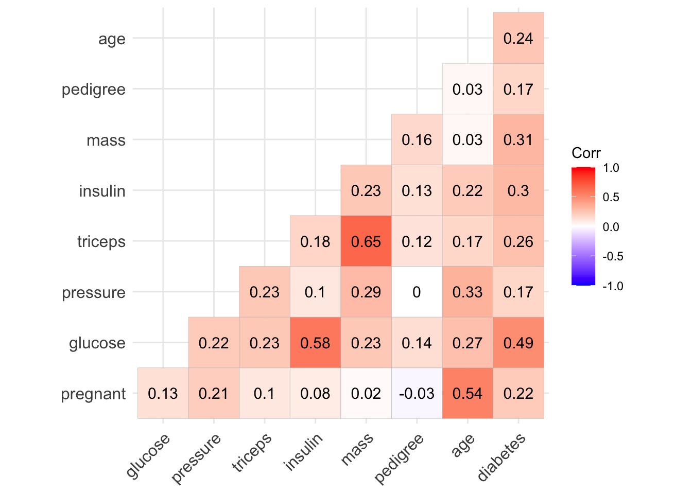
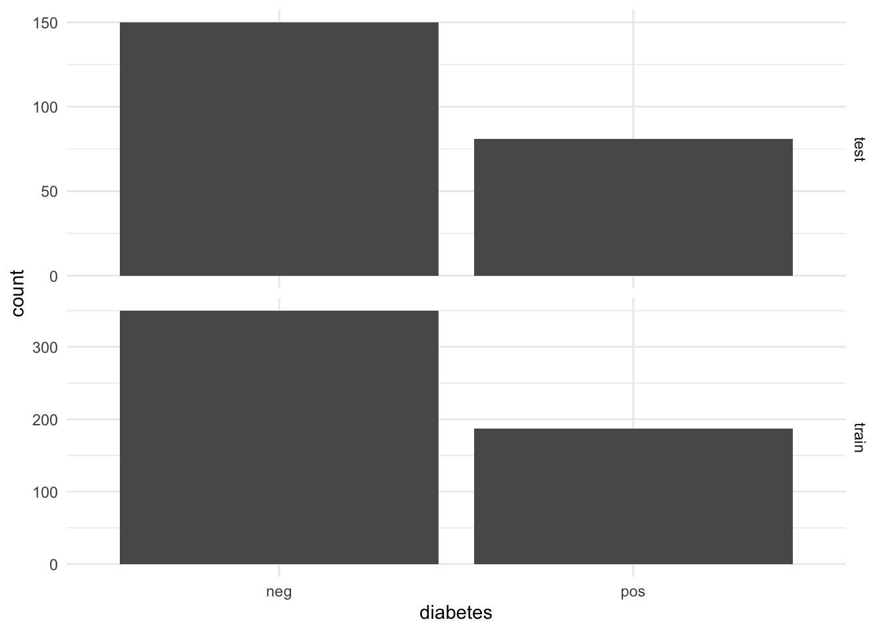
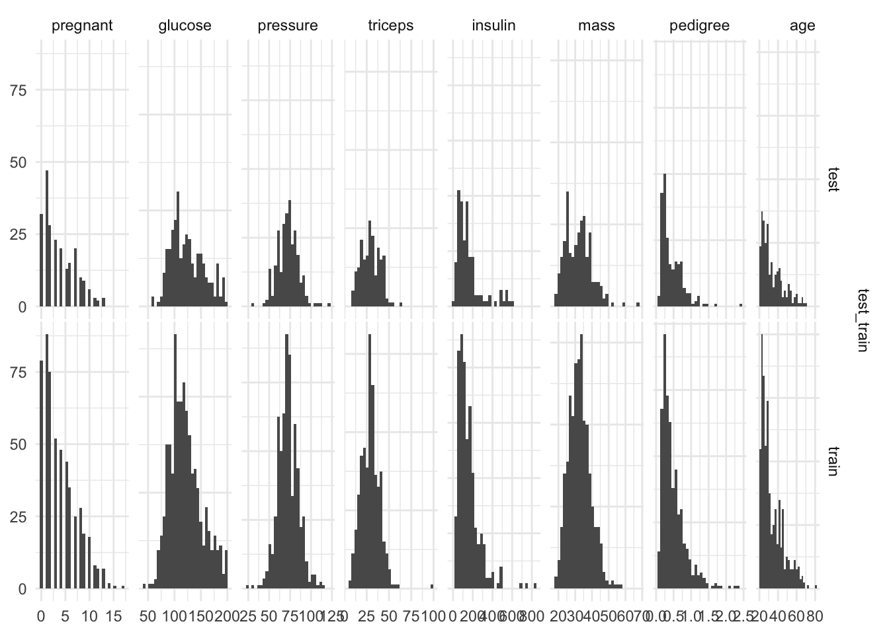

- Use tidyverse functions for exploratory data analysis;
- Introduce and explore the Pima Indians Diabetes dataset;
- Impute missing data.
Pima Indians Diabetes
Today, we are going to be working with Pima Indian Women’s diabetes dataset which contains information on 768 Pima Indian women’s diabetes status, as well as many predictive features:
- pregnant - Number of times pregnant
- glucose - Plasma glucose concentration a 2 hours in an oral glucose tolerance test
- pressure - Diastolic blood pressure (mm Hg)
- triceps - Triceps skin fold thickness (mm) - a measure correlated with body fat
- insulin - 2-Hour serum insulin (mu U/ml)
- mass - Body mass index (weight in kg/(height in m)^2)
- Age - Age (years)
- Outcome - diabetes status (pos - diabetic; neg - non-diabetic)
The Pima Indians are a group of Native Americans living in an area consisting of what is now central and southern Arizona. The short name, “Pima” is believed to have come from a phrase meaning “I don’t know,” which they used repeatedly in their initial meetings with Spanish colonists. Thanks Wikipedia!
Let’s Explore our data
Load data:
# load the Pima Indians dataset from the mlbench dataset
library(mlbench)
data(PimaIndiansDiabetes)
# rename dataset to have shorter name because lazy
diabetes_data <- PimaIndiansDiabetes
# look at the variable names
names(diabetes_data)[1] "pregnant" "glucose" "pressure" "triceps" "insulin" "mass" "pedigree"
[8] "age" "diabetes"# look at the data
glimpse(diabetes_data)Rows: 768
Columns: 9
$ pregnant <dbl> 6, 1, 8, 1, 0, 5, 3, 10, 2, 8, 4, 10, 10, 1, 5, 7, 0, 7, 1, 1…
$ glucose <dbl> 148, 85, 183, 89, 137, 116, 78, 115, 197, 125, 110, 168, 139,…
$ pressure <dbl> 72, 66, 64, 66, 40, 74, 50, 0, 70, 96, 92, 74, 80, 60, 72, 0,…
$ triceps <dbl> 35, 29, 0, 23, 35, 0, 32, 0, 45, 0, 0, 0, 0, 23, 19, 0, 47, 0…
$ insulin <dbl> 0, 0, 0, 94, 168, 0, 88, 0, 543, 0, 0, 0, 0, 846, 175, 0, 230…
$ mass <dbl> 33.6, 26.6, 23.3, 28.1, 43.1, 25.6, 31.0, 35.3, 30.5, 0.0, 37…
$ pedigree <dbl> 0.627, 0.351, 0.672, 0.167, 2.288, 0.201, 0.248, 0.134, 0.158…
$ age <dbl> 50, 31, 32, 21, 33, 30, 26, 29, 53, 54, 30, 34, 57, 59, 51, 3…
$ diabetes <fct> pos, neg, pos, neg, pos, neg, pos, neg, pos, pos, neg, pos, n…Look for missing data:
anyNA(diabetes_data)[1] FALSEIt seems like there is no missing data.
Get a summary of the data frame:
summary(diabetes_data) pregnant glucose pressure triceps
Min. : 0.000 Min. : 0.0 Min. : 0.00 Min. : 0.00
1st Qu.: 1.000 1st Qu.: 99.0 1st Qu.: 62.00 1st Qu.: 0.00
Median : 3.000 Median :117.0 Median : 72.00 Median :23.00
Mean : 3.845 Mean :120.9 Mean : 69.11 Mean :20.54
3rd Qu.: 6.000 3rd Qu.:140.2 3rd Qu.: 80.00 3rd Qu.:32.00
Max. :17.000 Max. :199.0 Max. :122.00 Max. :99.00
insulin mass pedigree age diabetes
Min. : 0.0 Min. : 0.00 Min. :0.0780 Min. :21.00 neg:500
1st Qu.: 0.0 1st Qu.:27.30 1st Qu.:0.2437 1st Qu.:24.00 pos:268
Median : 30.5 Median :32.00 Median :0.3725 Median :29.00
Mean : 79.8 Mean :31.99 Mean :0.4719 Mean :33.24
3rd Qu.:127.2 3rd Qu.:36.60 3rd Qu.:0.6262 3rd Qu.:41.00
Max. :846.0 Max. :67.10 Max. :2.4200 Max. :81.00 Look at the output of summary above and the table that explains what each of the variables are. Do the values make sense for all of: - (a) Pregnancies and Glucose - (b) Blood pressure and Skin thickness - (c) Insulin and DiabetesPedigreeFunction, and - (d) BMI and Age
If not, how do you think we should deal with them? Can you hypothesise what the consequences of this approach would be?
#Possibly missing:
colSums(diabetes_data == 0)pregnant glucose pressure triceps insulin mass pedigree age
111 5 35 227 374 11 0 0
diabetes
0 #Not missing:
colSums(diabetes_data != 0)pregnant glucose pressure triceps insulin mass pedigree age
657 763 733 541 394 757 768 768
diabetes
768 It is clear that the values of several variables are zero when it is impossible for them to be so (i.e. this value could not be zero if it was measured). Hence, we are dealing with “hidden” missing data, and should recode it as NA.
The following variables have zero “values” that are actually likely to be missing:
- Glucose (a)
- BloodPressure (b)
- SkinThickness (b)
- Insulin (c)
- BMI (d)
Let’s use visualisation to further explore the dataset
ggplot(
diabetes_data,
aes(
x = pressure,
y = glucose,
color = diabetes
)
) + geom_point(alpha = 0.5)
If we wanted to look at all possible scatterplot pairs we would do something like:
# make a pair plot
ggpairs(data = diabetes_data,
mapping = aes(color = diabetes),
upper = list(combo = "box"))
But it’s easier to look at a correlation plot:
# get a correlation matrix of the variables in the diabetes dataset:
diabetes_corr <- diabetes_data %>%
# recode outcome to be numeric (subtract 1 to return it to zero/one)
mutate(diabetes = as.integer(diabetes) - 1) %>%
cor()
ggcorrplot(diabetes_corr, type = "lower", lab = TRUE )
Let’s create a new dataframe d_na, which has the missing values recoded as NA:
d_na <- diabetes_data %>%
mutate(glucose = na_if(glucose, 0)) %>%
mutate(triceps = na_if(triceps, 0)) %>%
mutate(insulin = na_if(insulin, 0)) %>%
mutate(mass = na_if(mass, 0)) %>%
mutate(pressure = na_if(pressure, 0))
# approximately half of the dataset is complete, whereas half is missing data
table(complete.cases(d_na))
FALSE TRUE
376 392 naniar::gg_miss_var(d_na)
visdat::vis_dat(d_na)
Let’s compare the correlation plot from before with another one now that we’ve correctly labelled the missing data:
diabetes_corr_na <-
d_na %>%
# recode outcome to be numeric (subtract 1 to return it to zero/one)
mutate(diabetes = as.integer(diabetes) - 1) %>%
# use pairwise complete observations for the two variables
cor(use = "pairwise.complete.obs")
ggcorrplot(diabetes_corr_na, type = "lower",lab = TRUE)
Notice that the correlation between some variables (eg. pregnant - insulin) changes quite substantially. (Negative before to Positive now).
Train-Test Split
We’re going to split our data into 70% training and 30% testing sets.
Some standard checks on the test/train split
Look how many examples we have in the training and testing sets.
Plot histograms of outputs to check we stratified appropriately
together <- bind_rows(train = d_na_train,
test = d_na_test,
.id = "test_train" )
together %>%
ggplot(aes(x = diabetes))+
geom_bar()+
facet_grid(test_train~., scales = "free")
together %>%
{ggduo(.,
setdiff( names(.), c("test_train", "diabetes") ),
# column names not including test_train or the outcome
"test_train")} # faceted by test_train split
At some point we’re going to want to do some parameter tuning (explained later), and to do that we’re going to want to use cross-validation. So we can create a cross-validated version of the training set in preparation for that moment:
diabetes_folds <- vfold_cv(d_na_train, v=10, repeats = 5, strata = diabetes)
saveRDS(diabetes_folds, "../_models/diabetes_folds.rds")Impute missing data
Imputation is often used to handle missing data because many statistical methods and machine learning algorithms require complete data. When we do imputation, we aren’t adding new information to our dataset, but we are using the patterns in our dataset so that we don’t have to throw away the data that have some variables missing. We can impute the missing data using a recipe:
# set seed to be 42 so everyone gets the same results
set.seed(42)
diabetes_rec <-
d_na_train %>%
recipe(diabetes ~ .) %>%
# all our predictors are numeric so standardize them
step_normalize(all_numeric_predictors()) %>%
step_impute_median(all_predictors())
diabetes_rec
saveRDS(diabetes_rec, "../_models/diabetes_rec.rds")